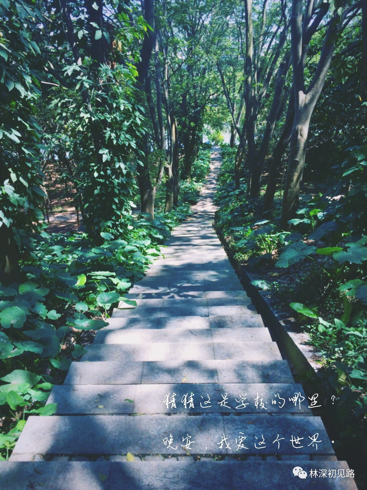
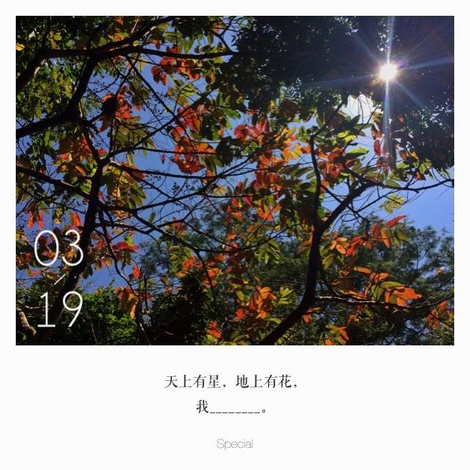
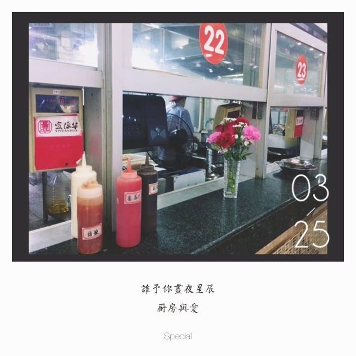
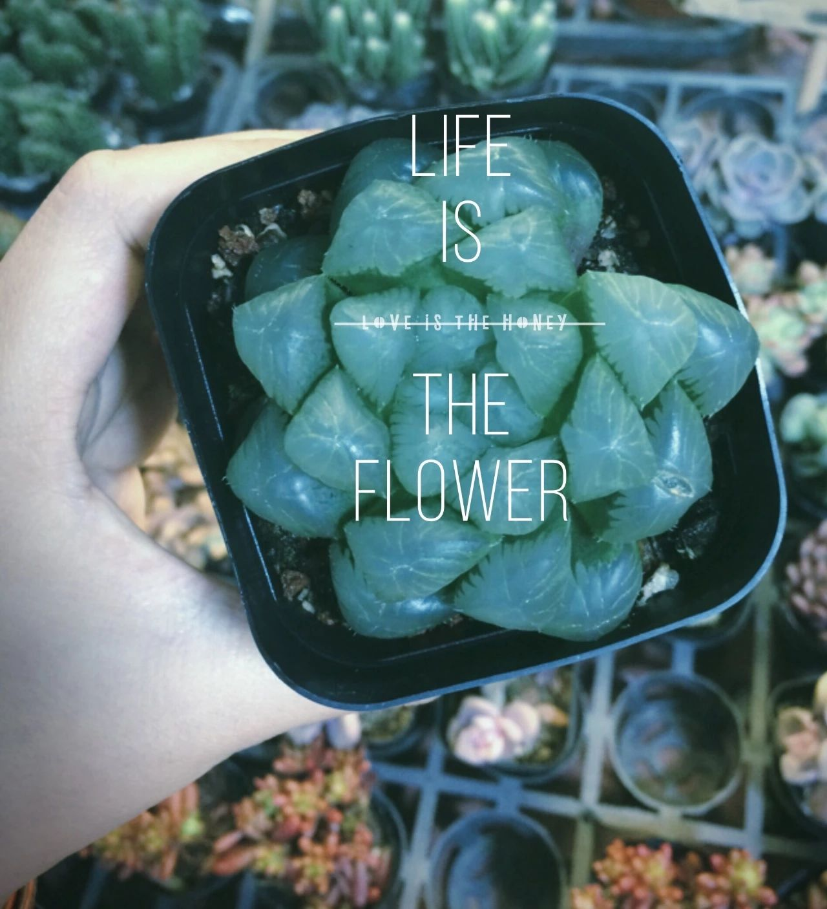
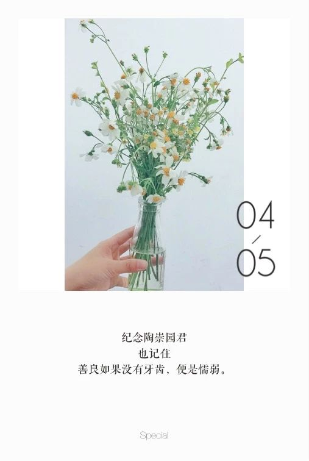

你可能喜欢的文章:
一. 推荐||我可以删除手机上所有的APP，但不能没有你
手机和平板功能已越来越强大，各种APP亦层出不穷，但是手机内存依旧是一个问题。此时让手机变得简洁同时又功能强大十分必要。一款好的APP能如虎添翼，让生活变得简单又有趣。
如何判断一个APP的好坏？
第一要义肯定是颜值，外貌好看直接影响了我们是否要下载和使用。
核心在于是否好用，这关系到我们多大程度上依赖一款APP，并能长久高频地使用。
二. 在三月的广州，带上好心情去看一场话剧吧
来广州的第二年，终于去看了一场心心念念的话剧。票价不贵，交通便捷，时间挤一挤也是有的。看完的感受，大概是更爱这个世界一点了吧。
3月11号周日下午3点,U13戏剧空间,《初吻》最后一场。
6号线沙河顶站A出口出来就习惯往右走了，而话剧院恰巧在左手边。怕找路耽搁时间，趁早出了门，看来这个决定是没错的。
转到沙河顶新一街的时候，突然觉得应该就是这了。小路窄窄，榕树成荫，旁侧是老楼。U13戏剧空间就藏在这里。
三. 26条时间管理技巧，了解一下？
网传Facebook员工征服世界靠的就是Mark Elliot Zuckerberg亲自制作的这26张幻灯片，带着对亿万富豪CEO的崇拜，我找到了这套非常有鸡血的PPT。尽管最后发现这其实并不是扎克伯格的杰作，这些时间管理方法也同样值得学习和掌握。
“扎克伯格亲自做了26张PPT提高员工效率”其实是叫《26 Time Management Hacks I Wish I'd Known at 20》，是一位叫Etienne Garbugli的产品设计与咨询顾问在2013年创作的作品。我们一起来看看吧!
时间管理的精髓是什么？并不多，却永远有效。
四. git简单应用
一.try-git网址上面的内容不太方便打开，根据《GitHub入门与实践》进行了学习，已经掌握：1.git init 2.git add 3.git commit 4.git remote add 5.git push 6.git log 7.git status 8.ls 9.pwd 10.cd 等常见操作。
五. 你会提问吗？
标题很蠢，但是足够简单也足以能表达我接下来要分享的内容的核心----如何提问？
提问的艺术在于让对方快速且准确地理解你要问的“点”在哪，当然，礼貌和不卑不亢的态度也是非常重要的。在发现自己遇到难点的时候，我们可以做到以下几点，这或许能帮助到我们及时解决问题。
六. Markdown基本语法总结
1.标题
标题通常用“#”开头来示意，有几个“#”就代表是几级标题,一共有6级标题。例如：
#我是一级标题
##我是二级标题
###我是三级标题
####我是四级标题
#####我是五级标题
######我是六级标题
注释： “#”与内容之间保留一个空格。
你可能喜欢的图片：
 猜猜这是学校的哪里？晚安，我爱这个世界。
 天上有星，地上有花，我有______.
 谁予你昼夜星辰，厨房与爱。
 Life is the flower.
 纪念陶崇园君，也记住，善良如果没有牙齿，便是懦弱。